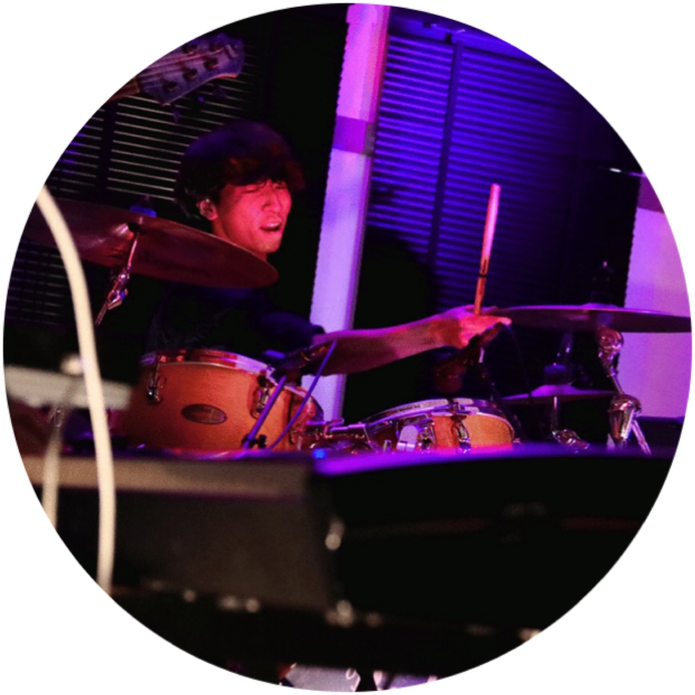

部員からのメッセージ

こんにちは。
部長の橋本陽央です。
東大POMPは学内で最大級のインカレバンドサークルであり、
所属大学・学年も様々ですし、それぞれの音楽的ルーツも多様です。
よく「音楽の趣味が極端なのですが入部しても大丈夫ですか？」のような質問を受けることがあるのですが、
私はそんな人にこそピッタリなサークルが東大POMPだと思います。
自分は高校時代プログレメタルばかり聞いていましたが、
初めて行ったPOMPの新歓イベントでメタルを語り合える先輩がいて驚きました。
どんなニッチなジャンルでも、語り合える仲間が絶対に見つかることを約束します。
もしあなたが自身の音楽嗜好のニッチさに自信があるならぜひ新歓イベント等にお越しください（笑）
またPOMPのもう一つの魅力は、一つのジャンルに傾倒していた人間でも多様なジャンルに触れることができて、
新たな音楽性を身に着けることができる点です。
実際私もPOMPに入ってからフュージョンやRnBをよく聞くようになりましたし、
その知識を演奏技術の向上に活かせました。
幅広い音楽の知識を身につけられて、それを演奏に活かしていくことで初心者から経験者まで等しく成長できる環境です。
東大POMPは音楽を愛するあなたの入部をお待ちしています。
ぜひイベントでお会いしましょう。

はじめまして！
副部長兼機材係の戸田絵理香です。
POMPに入れば、楽器がうまくなるのはもちろん、
音楽という共通の趣味を持つ仲間と出会うことができます。
音楽ジャンルの縛りがないサークルなので、POMPには各パート個性溢れる人材が揃っています。
私はそんなPOMPer達と接することで、様々な音楽を知り、 好きになるのと同時に
元々好きだったロックやブルースへの愛も深められていると思います。
所属は青山学院大学ですが、
大学の枠をこえた音楽を共に楽しめる仲間達と、刺激多めのPOMPライフを送れて心底幸せです。
音楽が好きであれば所属も年齢も性別も全く関係なく楽しめることでしょう！
是非一度POMPに遊びに来てください！
皆さんこんにちは！
副部長兼渉外の正木景大です！
楽器はトランペットを担当しております。
POMPを初めて見る方の中には「バンドでトランペット？」と思う方もいらっしゃる方もいるかもしれません。
しかし、トランペットを含むホーンセクション（トランペット、サックス、トロンボーンなどの管楽器）こそが
POMPのサウンドを支えていると言っても過言ではないでしょう。
オールジャンル、と言うこのサークルの特性上、
普通のサークルではあまり実現できないような編成のバンドを提案する部員も多く居ますし、
色々なジャンルに触れてきたとても上手な先輩方が教えてくれるおかげで
今まで吹奏楽やクラシックしか経験していなくてもファンクやジャズ•フュージョンの吹き方を学ぶことができます！
今まで出会わなかった音楽や上手な仲間たちと新しい楽器生活を初めてみませんか？
私たちは皆さんのことを待っています！
こんにちは！
会計兼コンパ係の黒井です。
POMPでは「本気だから楽しい」という感覚を味わえます。
これは音楽サークルという界隈では稀有なことです。
高い技術を持つ先輩や同期、後輩と一緒に演奏し、演奏を聴くことで
自分の上達のモチベーションが常に高く保たれます。
また、オールジャンルの音楽を演奏するので初めてのジャンルに挑戦できるのもPOMPの醍醐味の一つです。
一方、コンパなどの楽しいイベントでは各々好きなように羽を伸ばします。
お酒の強要は全く無く、本気で飲む人も全然飲まない人もいます。
「コンパ」という言葉を聞き、私は入部当初「怖いな」と思っていたのですがPOMPerは優しい人ばかりです。
話の上手い人も口下手な人も楽しい時間を過ごせます。
私は上記の「メリハリ」のお陰で最高のサークルライフを過ごしています！
この文章を読んでくださった方と一緒にPOMPで演奏できる日を心待ちにしております。